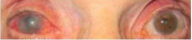

O Glaucoma é uma doença neurodegenerativa de etiologia multifatorial que figura entre as principais causas de cegueira no Brasil e no mundo. O desconhecimento sobre a doença, a não compreensão sobre a forma de utilizar o colírio, a di culdade de acesso ao serviço de saúde e a di culdade de comunicação com a equipe de saúde são fatores que podem resultar na não adesão ao tratamento. São fatores de risco associados ao Glaucoma Primário de Ângulo Aberto:
Leia o caso clínico a seguir. Durante a primeira consulta de puericultura, a mãe de um lactente do sexo masculino, com seis meses de vida, nascido de parto cesariano por história materna de cesáreas prévias, relata ter observado que o bebê apresenta lacrimejamento contínuo no olho direito, acompanhado de conjuntiva avermelhada e "dilatação de pupila". A mãe refere ainda que o lactente apresenta-se irritado durante o dia, acalmando-se durante a noite e em ambientes escuros. À inspeção ocular, observa-se aumento do globo ocular e da trama vascular da conjuntiva, com diferença no tamanho das córneas. Entre as causas congênitas de alterações oculares, a principal hipótese diagnóstica para o caso é:
O glaucoma é uma das principais causas de cegueira irreversível no Brasil. A droga hipotensora ocular que atua tanto por diminuir a secreção de humor aquoso quanto por aumentar o fluxo uveoscleral é:
J.G.J., 55 anos, feminina, hipermétrope, chega ao Pronto Socorro Municipal no plantão noturno com visão embaçada, dor ocular intensa, náusea, vômito, bradicardia e sudorese. O quadro clínico apresentado deve-se
Mulher de 68 anos de idade chega ao pronto-socorro com dor insuportável em olho direito e náuseas. Refere que a dor teve início de forma súbita há 3 horas, sendo acompanhada por baixa de acuidade visual e olho vermelho. Nega doenças oculares prévias, além da hipermetropia. Refere ser diabética e hipertensa com controle irregular, e que iniciou recentemente tratamento para depressão com nortriptilina. À inspeção, observa-se o quadro a seguir. Qual alternativa apresenta uma característica clínica e um fator de risco associados à principal hipótese diagnóstica para o caso?

No tratamento do glaucoma primário de ângulo aberto (GPAA), é INCORRETO afirmar:
Glaucoma Primário de Ângulo Fechado, assinale a alternativa correta:
Paciente comparece à consulta com queixa de perda visual de início há dois dias, gradual, que no momento alcançou perda total da visão em olho direito. Relata que há algumas horas iniciou dor intensa. Refere ser diabético em uso irregular de medicação, hipertenso em acompanhamento. Nega traumas. Ao exame, observa-se hiperemia difusa, reflexo direto diminuido, tensão ocular elevada e à lâmpada de fenda evidencia ausência de ângulo estreito. Com base no quadro anterior, é correto afirmar que a hipótese diagnóstica mais provável para o quadro é:
Mulher idosa, comparece ao pronto-socorro com queixa de perda súbita da visão, tendo o quadro iniciado há algumas horas, não progressivo, estando no momento somente com percepção luminosa. Refere, também, dor ocular intensa de início concomitante a perda visual, com náuseas. Alega ser diabética controlada, nega outras patologias ou traumas. Ao exame, observa-se hiperemia difusa, com médio-midríase xa e tensão ocular aumentada. Assinale a alternativa que apresenta corretamente a hipótese diagnóstica mais provável para o caso.
Um homem com 48 anos de idade procura uma Unidade Básica de Saúde queixando- se de olhos vermelhos, dor ocular à direita intensa e vômitos há 3 dias. Refere que sua acuidade visual piorou e que está enxergando "vultos". No exame físico do paciente, verifica-se hiperemia conjuntival à direita e, no exame com luz direta, confirma-se midríase moderada não- reagente à luz. À palpação bilateral do bulbo, observa-se endurecimento à direita. A pressão arterial do paciente é de 165 x 95 mmHg. Nesse caso, qual o diagnóstico mais provável e o tipo de consulta oftamológica mais apropriada?
Mulher de 75 anos, hipermetrope, com queixa de dor ocular à direita há 1 dia. EF: hiperemia ocular pericerática e pupila em semi-midríase paralítica. A hipótese diagnóstica mais provável é:
Buftalmo, epífora e edema de córnea (aspecto esbranquiçado) são sinais clínicos relacionados com:
Qual das seguintes medicações pode precipitar o glaucoma de fechamento angular agudo?
Recém-nascido com lacrimejamento, fotofobia e blefaroespasmo nos dois olhos, sugere:
Em relação ao glaucoma crônico de ângulo aberto, considere as seguintes assertivas: I. A visão central geralmente está preservada até estágios finais da doença. II. A hiperemia e a dor ocular são sintomas. III. A campimetria auxilia o diagnóstico. Está / Estão correta (s) a (s) afirmativa (s)
Em relação ao glaucoma crônico de ângulo aberto, assinale a alternativa CORRETA:
Mulher de 55 anos apresenta dor intensa no olho direito com diminuição da acuidade visual neste olho, acompanhada de náuseas e vômitos. Inspeção: hiperemia ocular, midríase paralítica e edema de córnea. Nessa situação a hipótese diagnóstica é:
No caso de diagnóstico diferencial de olho vermelho, é comum, nos casos de glaucoma agudo, além de dor intensa:
Qual dos componentes de colírios relacionados abaixo causa catarata e glaucoma
Assinale a alternativa mais adequada sobre o exame clínico de glaucoma de ângulo fechado agudo:
Homem de 58 anos apresenta-se na emergência hospitalar com dor ocular direita intensa, associada a náuseas e vômitos. Relata que o quadro se iniciou há 1 dia, com piora progressiva e que, no início, percebia halos ao redor das luzes. Ao exame, apresenta olho avermelhado, congesto e pupila que permanece em estado de médio-midríase xa. Nega outras doenças. Diante da apresentação clínica, qual o tratamento inicial mais apropriado para este paciente?
A tríade clínica de epífora, fotofobia e blefaroespasmo é característica de qual patologia oftalmológica congênita?
Homem que trabalha com metalurgia (soldador) de 47 anos refere início súbito de turvação visual, dor ocular bilateral e resplandescência (halo ao olhar para de fontes luminas). Ao exame, observa-se hiperemia conjuntival difusa e congestão conjuntival periférica. A pupila se encontrava mediomidriática. O diagnóstico provável é:
Durante uma crise de glaucoma agudo, de ângulo fechado, é contraindicado o uso da seguinte medicação:
Gabriel, 30 anos, procura a Unidade de Saúde da Família com queixa de hiperemia conjuntival, dor ocular, náuseas e cefaleia. Ao exame nota-se injeção ciliar, edema de córnea, pupila em discreta midríase paralítica. Qual o diagnóstico de Gabriel?
Em um paciente com forte dor ocular, visão muito borrada, fotofobia, lacrimejamento intenso e globo ocular difusamente vermelho, a principal hipótese diagnóstica é:
Paciente do sexo masculino, 60 anos, procura o pronto -socorro com queixa de dor ocular intensa, baixa de acuidade visual súbita à esquerda, cefaleia, náusea e vômito. Ao exame, apresenta acuidade visual de 20/20 no olho direito e conta dedos a 1 metro no olho esquerdo, injeção ciliar, edema de córnea, midríase paralítica, e pressão intraocular bidigital aumentada no olho esquerdo. A hipótese diagnóstica mais provável é:
Osvaldo tem 62 anos, trabalha como porteiro de escola e permanece em acompanhamento com diagnóstico de diabetes, polineuropatia e glaucoma de ângulo fechado. No retorno ambulatorial refere dor em “ambas as pernas” sendo medicado com amitriptilina. Evolui com olhos vermelhos, dor importante na cabeça e sobre os olhos, visão com halos coloridos, náuseas e vômitos. O diagnóstico mais provável de Osvaldo e a orientação pertinente são, respectivamente:
Assinale a alternativa que indica a tríade do glaucoma congênito: Respostas: 1 12 23